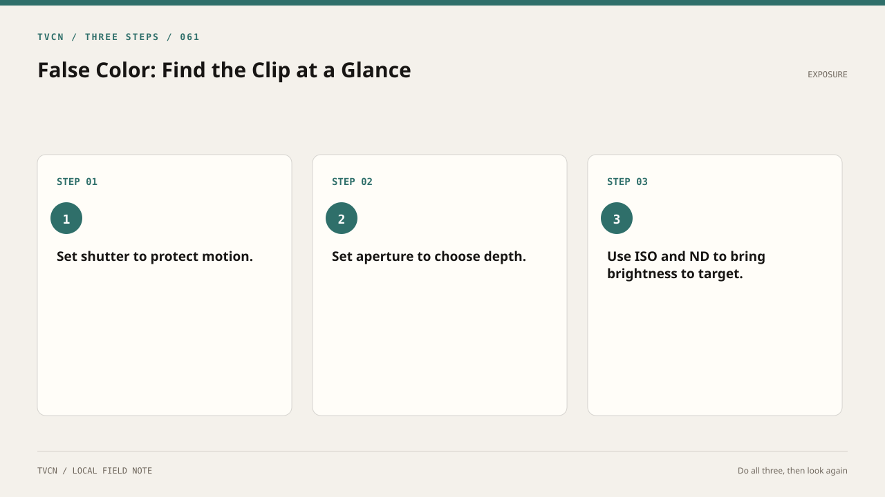

On set
Put the face in the skin patch and keep the sky out of red. Change the light first, not the ISO.
Do this
False color maps luminance into color blocks, so overexposed skin or a dead sky is obvious. Check skin first, then highlights.
- Put the face in the skin-tone zone with no red warning.
- Keep the sky out of red so highlight detail survives.
- Change light or add ND first; do not raise ISO to compensate.
Avoid
Do not treat false color as a look; red is a warning, not a style.
Three-step flow

Calibrate the monitor first
False colour is not a universal standard: brands map 70–90% luminance to different colours. Confirm the skin-tone band, highlight warning and overexposure red on your monitor. Never judge from the camera LCD.
Set zebra to 95%: false colour shows distribution, the waveform shows values. When they disagree, trust the waveform and the Log/Raw headroom. False colour is a locator, not a meter.
Lighting order
- Set the key light first and put the face in the skin-tone band. Do not raise ISO to brighten the background.
- Then treat windows and practicals: add ND, change bulbs or draw curtains so highlights leave the red.
- Check the shadows last: keep some texture in black clothing; do not crush the dark side to save the highlight.
Without ND, change the light position or camera angle first. ISO is for the last third of a stop, not for rescuing three stops of overexposure.
False-colour misreads
- Treating red as a look: red is a warning, not a LUT. Lower the highlight first, then talk about tone.
- Checking the face but not the window: the face is fine, the window is pure white and cannot be recovered.
- Judging on the camera LCD: its brightness changes with the room. Use an external monitor or the waveform.
- Assuming every camera maps colour the same: confirm each body’s false-colour scale.
Exposure acceptance log
- The face sits in the skin-tone band with no red patch; nose and forehead are not the first to clip.
- Windows, bulbs and white walls retain layers; highlights are not a flat white block.
- Black clothing still shows folds; shadows are not a single black mass.
- Log EI, ND setting, light position and monitor model; recheck after a lens change.
Exposure log
One line per setup: body, EI, ND, key position, monitor model, brightest window reading and the face’s false-colour band. Recheck after a lens or window change; do not reuse the previous setup’s exposure.
Image note. Covers, diagrams and step images on this page are editorial illustrations or structure diagrams, not photographs of a test performed here; they are not evidence of measured gear performance. Where an image is AI-assisted, the caption says so. Read the test conditions in the text before treating an image as proof.